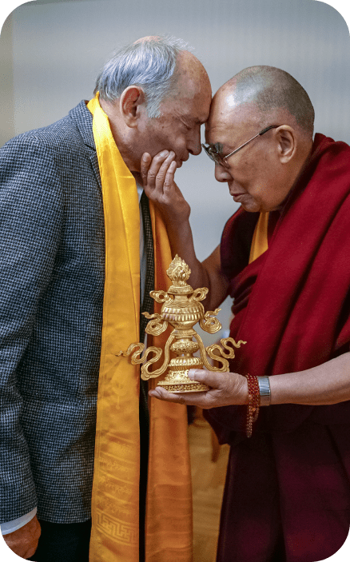
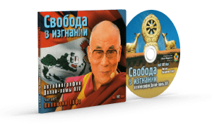

Мы искренне верим, что буддийская культура несет в себе огромный потенциал, способствующий
достижению, как
каждым отдельно взятым человеком, так и обществом в целом, ясности и спокойствия ума, высокого
уровня эмпатии,
более здорового, устойчивого духа и тела.
| О Фонде
В 2020 году мы создали Благотворительный фонд «Океан Мудрости» для сохранения и развития буддийской
культуры.
Организовываем и поддерживаем инновационные проекты, которые раскрывают прикладное значение, глубину
и
невероятную актуальность буддийской культуры в условиях современного мира.
Практическое применение духовных, нравственных и этических буддийских ценностей, их репрезентацию
в современном формате с помощью разнообразных медиа — это основные наши направления и цели. Мы
открыты
для сотрудничества и новых идей.
| Анатолий Джуджиев, исполнительный директор Фонда

К 80-летию духовного лидера буддистов подготовлена удивительная
аудио-версия
знаменитого автобиографического произведения Его Святейшества Далай-ламы «Свобода
в изгнании».
Голосом Его Святейшества Далай-ламы стал выдающийся актер российского
театра и
кино Валентин Иосифович Гафт.
Валентин Гафт, Народный артист РСФСР,
вспоминает:
Я восхищен человеком, от лица которого говорил. Я старался приблизиться
к нему,
хотя приблизится к нему, думаю, невозможно, но даже прикоснуться к этой личности было для меня
большой
честью.

| Наши проекты
Строительство Ретритного Центра
Ретритный центр «Тантрического монастыря Владыки Цонкапы» (г. Городовиковск, Республика Калмыкия)
строится по
инициативе первого настоятеля досточтимого Тхуптен Тхинлая.
Двери центра будут открыты для практикующих буддистов, решивших провести интенсивный ретрит по
предварительным
подготовительным практикам «Нёдро», «Ньюнгнэ», а также проведения затворничества приближения
«Лерунг»,
под руководством нынешего настоятеля монастыря досточтимого Кесанг Ямхе.
Строительство находится на завершающей стадии, идут внутрение отделочные работы.


В основе аудиокниги автобиография матери Его Святейшества Далай-ламы
Дики Церинг
«Мой сын Далай-лама. Рассказ матери».
От автора текст читает Народная артистка СССР, театральный режиссер
Галина
Борисовна Волчек.
Галина Борисовна Волчек — мужественный человек. Ей было трудно
передвигаться и
говорить, и она попросила осуществить запись у нее дома. Мы приезжали к ней на дачу с
аппаратурой
и записывали материал по четыре часа. Закончили работу, она отказалась от авторского гонорара,
сказав:
“Пусть это будет моим подношением калмыцкому народу и Его Святейшеству Далай-ламе”
Анатолий Джуджиев,
исполнительный директор Фонда
| Наши проекты
Аудиокниги

Мой сын Далай Лама
Исследование структуры сознания
Книга об исторически значимом диалоге между ведущими западными учеными и
Далай-ламой XIV. Совместная конференция посвящалась трем ключевым состояниям — сну, сновидениям и смерти,
которые были названы известным неврологом Франциско Дж. Варелой "теневыми зонами эго". В конференции
участвовали такие известные ученые, как философ Чарльз Тейлор, психоаналитик Джойс Мак-Дугал, психолог
Джейн Гакенбах, культуролог Джоан Халифакс ...

Свобода в изгнании
Автобиография Далай-ламы XIV
К 80-летию Его Святейшества Далай-ламы подготовлена удивительная
аудио-версия его
знаменитого автобиографического произведения «Свобода в изгнании». Голосом Его Святейшества
Далай-ламы
стал
выдающийся актер российского театра и кино Валентин Иосифович Гафт.

“Иткл” — евәлин ном
Устная передача (лунг) и комментарий на калмыцком языке Шальван
Гегәна XIV
В последние десятилетия в нашей республике произошли события, благодаря
которым
калмыцкий народ вновь обрел веру в себя и будущее. Это посещение калмыцкой земли Далай-ламой
XIV, а также
визиты в Калмыкию Главы буддистов СУАР КНР Шальван Гегәна XIV, во время которых калмыки
впервые после
забвения и многих лет репрессий услышали высокое учение Будды на родном языке.
Мой сын
Далай Лама
Рассказ матери
Аудиокнига озвучена (с сокращениями) по изданию "Мой сын Далай-Лама. Рассказ
матери" Дики Церинг.
"Бабушка Тибета" рассказывает потрясающую историю своей жизни — жизни матери Его
Святейшества четырнадцатого Далай-Ламы. Рассказ этой замечательной женщины богат историческими и
культурными деталями, полон чарующих образов, воспоминаний и событий, о которых не смог бы поведать миру
никто другой, кроме нее, матери Далай Ламы.
В своих увлекательных мемуарах Дики Церинг живо и искренне повествует об
удивительных страницах своей жизни — проведенных в бедности юных годах, о традициях и ритуалах Древнего
Тибета, о своих оставшихся в живых семерых детях. Она с нежностью вспоминает монахов, приехавших в их
маленький городок в поисках нового Далай Ламы, трудное путешествие всей семьи в Лхасу как раз перед
началом китайской оккупации Тибета, их жизнь в Лхасе, побег в Индию и чудесное спасение.
В работе над проектом принимали участие:
Издательство "Океан мудрости" (Элиста)
Калмыцкий буддийский центр "Номин Туг" (Элиста)
Студия "Cmrecords" (Москва)
Художественное оформление В. Санджиевой
Текст читает Галина Волчек.
Свобода в изгнании
Автобиография
Далай-ламы XIV
К 80-летию Его Святейшества Далай-ламы подготовлена удивительная
аудио-версия его знаменитого автобиографического произведения «Свобода в изгнании».
Голосом Его Святейшества Далай-ламы стал выдающийся актер российского театра и кино
Валентин Иосифович Гафт.
Валентин Гафт:
«Я восхищен человеком, от лица которого говорил. Я старался приблизиться к нему,
хотя приблизиться к нему, думаю, невозможно, но даже прикоснуться к этой личности
было для меня большой честью.
Это одна из самых высших степеней мирности, простоты и человекознания — безо всякого
нажима, безо всякого утрирования, безо всякой сказочности... Здесь все реально —
реально и непостижимо. Все самое мудрое, великое, таинственное становится таким
мягким, прозрачным. Найти путь к этому, прийти к этому очень непросто. Далай-лама —
человек, познавший саму жизнь, приблизившийся к мудрости, которой так не хватает в
мире и которая так нужна, чтобы помогать людям жить, помогать тому, что именуется
словом "живые"...
Встреча с этим человеком дарует необыкновенную энергию. Энергия эта рождается из его
понимания, знания жизни. Как сам он пишет, это не просто какая-то космическая
энергия, но энергия, рождающаяся из его миссии, из познания истины, из стремления
прийти на помощь к другому. Такие люди, как Далай-лама, даны нам для того, чтобы
понять необыкновенность мира, в котором мы живем, раскрыть для себя понятия доброты
и человечности в исконном смысле этого слова...»
В работе над аудио-книгой принимали участие:
Центр тибетской культуры и и информации в Москве
Издательство «Океан мудрости» (г. Элиста)
Калмыцкий буддийский центр «Номин Туг» (г. Элиста)
Московская община буддистов (г. Москва)
Фонд «Сохраним Тибет» (г. Москва)
Публикуется с согласия «Фонда Далай-ламы» (Dalai Lama Trust) и издательства «Нартанг».
Большая часть тиража передана в дар людям-инвалидам с частичной или полной потерей
зрения. Средства, полученные от продажи аудио-книги, направлены на допечатку тиража для
дальнейшего распространения книги среди людей-инвалидов с потерей зрения.
“Иткл” — евәлин ном
Устная передача (лунг) и комментарий на калмыцком языке Шальван
Гегәна XIV
В последние десятилетия в нашей республике произошли события, благодаря
которым калмыцкий народ вновь обрел веру в себя и будущее. Это посещение калмыцкой земли
Далай-ламой XIV, а также визиты в Калмыкию Главы буддистов СУАР КНР Шальван Гегәна XIV, во
время которых калмыки впервые после забвения и многих лет репрессий услышали высокое учение
Будды на родном языке.
По этому поводу ученый-джангаровед Кичиков А.Ш. выразился так: «Более 70 лет светоч Учения
Будды был для нас погашен. «Иткл» и комментарии к ним — именно то, чего я ждал в течение
всей жизни. Поэтому считаю это историческим событием».
Эти слова хочется дополнить другими: «Буддизм — это Будда, Дхарма (учение) и Сангха
(община). Будду можно отменить, Сангху — запретить, но Дхарму никак не смогут запретить,
поскольку она навечно вошла в кровь и плоть народа. Мы теряли в переходах и кочевьях свои
бурханы, монахи гибли под клинками агрессоров, но народ сохранял веру, сохранял свою дхарму…
Именно это и будет способствовать тому, чтобы калмыки не затерялись на многотрудных дорогах
будущего». (Леджинов А.И. «Наша Дхарма», Элиста, 2002 г.)
Пусть издание текста молитвы «Иткл» поможет Объединению Буддистов Калмыкии во главе с Шаджин
ламой Тэло Тулку Ринпоче в благородном деле возрождения Учения Будды на языке великих
предков.
Калмыцкий буддийский центр «Номин Туг»
| Наши проекты
Электронные книги
Сон, сновидения и смерть
Исследование структуры сознания
Книга об исторически значимом диалоге между ведущими западными учеными
и Далай-ламой
XIV. Совместная конференция посвящалась трем ключевым состояниям — сну, сновидениям
и смерти, которые были
названы известным неврологом Франциско Дж. Варела "теневыми зонами эго"...
Сутра сердца
Учения Далай Ламы XIV о праджняпарамите
В настоящей книге приведен полный перевод текста Сутры сердца
Праджня-парамиты и
подробный комментарий на него, данный Далай-ламой XIV во время учений в 2001 году.
Сутра сердца – это представленное в краткой, тезисной форме учение о глубокой мудрости,
опирающейся на
прозрение пустотности «внешних» явлений и индивидуальной самости. Его Святейшество
Далай-лама объясняет,
как избежать неправильного понимания этих ...

Моя страна и мой народ
Воспоминания Его Святейшества Далай Ламы XIV
Книга, которую Вы держите в руках, была продиктована Его Святейшеством
Далай Ламой
вскоре после бегства в 1959 году из оккупированного китайцами Тибета. Почти сразу её
перевели на десятки
языков, и этот по-человечески простой рассказ лидера древнейшей мировой религии
и, одновременно, правителя
самой таинственной страны нашей планеты о своей жизни и трагической судьбе тибетского народа
уже стал
классикой ...
Буддийское наследие Индии
Вступление Его Святейшества Далай-Ламы XIV
Эта книга представляет собой уникальный рассказ о путешествиях по
местам буддийского наследия Индии от святынь штатов Уттар Прадеш и Бихар в Сикким и Аруначал
Прадеш до высот Ладака и Химачал Прадеша, а также Непала. В этом заключается дхармаятра или
"буддийский круг" паломничества для последователей Будды.
В книге, с ее богатейшим и обширным материалом, рассказывается о жизненном пути Будды
Шакьямуни ...
Вселенная в одном атоме
Автор — Его Святейшество Далай-Лама XIV
Его Святейшество Далай-лама посвятил свою жизнь созерцательным духовным
практикам и глубокому изучению буддийской философии. Наряду с этим, по его собственному
признанию, он всегда питал живой интерес к современной науке. В книге "Вселенная в одном
атоме", опираясь на более чем сорокалетний опыт диалогов с выдающимися учеными
современности, Далай-лама убедительно показывает, что, лишь совмещая методы исследования,
присущие науке ...
Сон, сновидения и смерть
Исследование структуры сознания
Книга об исторически значимом диалоге между ведущими западными учеными и
Далай-ламой XIV. Совместная конференция посвящалась трем ключевым состояниям — сну, сновидениям и смерти,
которые были названы известным неврологом Франциско Дж. Варелой "теневыми зонами эго". В конференции
участвовали такие известные ученые, как философ Чарльз Тейлор, психоаналитик Джойс Мак-Дугал, психолог
Джейн Гакенбах, культуролог Джоан Халифакс и невролог Джером Энджел.
Участники уникального обмена мнениями постоянно удивляют и восхищают нас своими находками сходства
и различия между наукой и буддизмом. Книга-отчет об этом событии увлекательна и рассчитана на широкий круг
читателей.
Сутра сердца
Учения Далай-Ламы XIV о праджняпарамите
В настоящей книге приведен полный перевод текста Сутры сердца
Праджня-парамиты и подробный комментарий на него, данный Далай-ламой XIV во время учений в 2001 году.
Сутра сердца – это представленное в краткой, тезисной форме учение о глубокой мудрости, опирающейся на
прозрение пустотности «внешних» явлений и индивидуальной самости. Его Святейшество Далай-лама объясняет,
как избежать неправильного понимания этих категорий, и показывает, что постижение пустотности ведёт не к
нигилистическому отрицанию, но к новому видению реальности и подлинному состраданию. В процессе объяснения
дается широкий обзор традиции тибетского буддизма, от предварительных практик до тонкостей философского
анализа школы Прасангика-мадхьямака.
Моя страна и мой народ
Воспоминания Его Святейшества Далай-Ламы XIV
Книга, которую Вы держите в руках, была продиктована Его Святейшеством Далай
Ламой вскоре после бегства в 1959 году из оккупированного китайцами Тибета. Почти сразу её перевели на
десятки языков, и этот по-человечески простой рассказ лидера древнейшей мировой религии и, одновременно,
правителя самой таинственной страны нашей планеты о своей жизни и трагической судьбе тибетского народа уже
стал классикой.
Далай Лама рассказывает о сравнительно счастливой жизни тибетцев до китайского вторжения, о том, как
и почему в нём распознали перевоплощение предыдущего Далай Ламы, о том, как он рос и воспитывался.
Приняв в 16-летнем возрасте всю полноту духовной и светской власти, в начале китаяяйской агрессии Далай
Лама пытался ненасильственными методами спасти свой народ от геноцида, взывая к защите ООН и ведя
переговоры с Мао Цзе-дуном.
Позднее, руководя тибетским правительством в эмиграции, Его Святейшество, несмотря на ту кошмарную бойню,
которую китайцы учинили в Тибете, продолжал следовать буддийским принципам ненасилия, и в 1988 году был
удостоен Нобелевской премии мира.
К сожалению, и поныне, несмотря на компромиссный шаг Далай Ламы - согласие не требовать восстановления
полной независимости Тибета — КНР отказывается от переговоров и продолжает в Тибете политику культурного
геноцида.
Буддийское наследие Индии
Вступление Его Святейшества Далай-Ламы XIV
Эта книга представляет собой уникальный рассказ о путешествиях по местам
буддийского наследия Индии от святынь штатов Уттар Прадеш и Бихар в Сикким и Аруначал Прадеш до высот
Ладака и Химачал Прадеша, а также Непала. В этом заключается дхармаятра или "буддийский круг"
паломничества для последователей Будды.
В книге, с ее богатейшим и обширным материалом, рассказывается о жизненном пути Будды Шакьямуни -
от рождения в Лумбини до махапаринирваны в Кушинагаре, и о местах, где он давал Учение. В то же время в
этом путеводителе собраны археологические летописи о множестве святынь, созданных в период правления
древнего императора Ашоки, которые впоследствии посещали преданные и бесстрашные азиатские паломники.
Многие столетия спустя эти места вновь увидели свет благодаря усилиям колониальных экспедиций
и археологов.
"Буддийское наследие Индии" - незабываемый калейдоскоп историй о священных ступах, монастырях,
изображениях и скульптурах, а также об известных исторических персонажах, связанных с буддизмом. Книга
проиллюстрирована уникальными фотографиями.
Автор книги, Сунита Двиведи родилась в Кушинагаре, где Будда Шакьямуни достиг махапаринирваны. Она —
увлеченный фотограф и путешественница, по профессии журналистка, более 15 лет работала в таких известных
изданиях, как "Таймс оф Индия", "Хиндустан Таймс", "Пионер", "Нортерн Индия Патрика" и др. В 1997 году
Сунита оставила постоянную работу ради осуществления заветной мечты всей жизни - пройти по стопам Будды. С
раннего детства ее вдохновляли статуя Будды в храме Махапаринирваны и ступа Рамабхар, расположенная позади
ее дома. Ей хотелось больше узнать о Пробужденном и его пути к освобождению. Ее одинокое, долгое, трудное
и временами опасное путешествие по буддийским святыням заняло два года. Не имея с собой багажа - только
два фотоаппарата и тяжелый штатив - она путешествовала пешком, на рикше, в вагонетках, автобусах, поездах,
вертолетах и самолетах.
Этот путеводитель, написанный в стиле приключенческого романа, будет полезен любому паломнику или туристу,
отправляющемуся в Индию по стопам Будды.
Вселенная в одном атоме
Его Святейшество Далай-лама посвятил свою жизнь созерцательным духовным
практикам и глубокому изучению буддийской философии. Наряду с этим, по его собственному признанию, он
всегда питал живой интерес к современной науке. В книге "Вселенная в одном атоме", опираясь на более чем
сорокалетний опыт диалогов с выдающимися учеными современности, Далай-лама убедительно показывает, что,
лишь совмещая методы исследования, присущие науке и духовным традициям (в первую очередь буддизму), можно
получить целостную картину мира.
Рассматривая дарвинизм и карму, квантовую механику и философские прозрения в природу бытия, нейробиологию
и исследования сознания, он проводит параллели между созерцательным и научным подходами к изучению
реальности. Это захватывающее исследование стало подношением Далай-ламы его собственным наставникам -
духовным учителям и современным ученым, таким, как Дэвид Бом, Карл фон Вайцзеккер, Франциско Варела, и
другие. В нем он рисует вдохновляющую картину мира, где разные подходы к пониманию людьми самих себя,
нашей Вселенной и друг друга поставлены на службу всему человечеству.
В последние два года к диалогам с Его Святейшеством Далай-ламой присоединились и российские ученые. Книга
"Вселенная в одном атоме" легла в основу обсуждения на конференции "Понимание мира", которая состоялась
в рамках проекта "Фундаментальное знание. Диалог российских и буддийских ученых" в индийском городе
Дхарамсале в мае 2018 года.